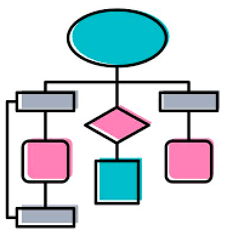
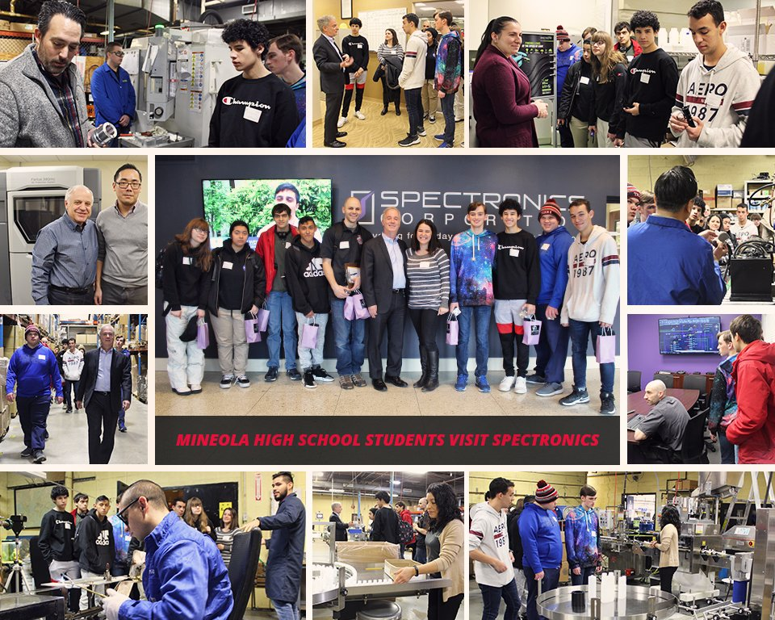

The mission of the Mineola Union Free School District is to inspire each student to be a life-long learner, pursue excellence, exhibit strength of character and contribute positively to a global society.
Kuri DiFede is a High School Computer Science and Robotics Teacher.
I grew up in a small town in rural Virginia. After graduating, I attended the University of Richmond and received a Bachelors of Science in Interdisciplinary Physics.
During my undergraduate experience my eyes were opened to a whole new world. I was the first in my family to attend college,
and it gave me opportunities that I otherwise would have never had. I believe that eduation can be a great equalizer, and it
is one of the reasons that I have returned to the field.
During my undergraduate studies I was fortunate enough to obtain a research position for the Department of Engergy, where
I ran simulations for the particle accelerator in Norfolk, Va. This turned me on to computer science, a field that I had never
considered before, and led me to pursue my masters in that field.
I completed my Masters of Science in Computer Science at New York University, working full-time at the school as an
educational technologist at the same time. I spent a lot of time teaching teachers and professors to use technology effectively
to help meet students needs, but I felt a need to get into the classroom myself.
After NYU, I worked at the Dalton School, an progressive independent school on the upper-east side. There, my role was varied as I taught teachers and students,
working on integrating projects across disciplines as well as teaching computer science, technology and robotics. I worked across grades 4-12.
In my role there I faciliated dozens of faculty workshops, taught classes, provided tech support and took several robotics teams to the world championships in FLL, FTC and Robocup jr.
In 2016 I was hired at Mineola, where I am a computer science teacher and robotics coach. At Mineola I have developed and delivered the curriculum for 8 different courses. I have
co-led the schools FTC and FRC teams, taking the FRC teams to worlds twice. I have worked to provide my students with innovative classroom assignments, and have been recognized for
winning the congressional app challenge, as well as the Follet Challenge.
More important than the accollades, I have made real relationships with students in Mineola, and have enjoyed getting to know them
and watching them succeed. I still keep in contact with many of the students who graduated, and I am so proud to have been a part of their journey.
Outside of Mineola, I like traveling and sprning time with my family, which includes two loving and engergetic children, and
two loyal and lazy dogs.
The mission of the Mineola Union Free School District is to inspire each student to be a life-long learner, pursue excellence, exhibit strength of character and contribute positively to a global society.
Being a Lifelong Learner is an extremely important part of being a teacher and a member who contributes to our society. A lifelong learner is someone who never stops learning. They are someone who
understands that there is always more to learn, and searches for knowledge in both traditional and non-traditional ways. As a teacher, I am constantly learning myself, and looking for ways to better approach
engagement strategies and delivering content. I am always looking to the wisdom and expertise of other teachers and educational leaders and strive to create a classroom that is inclusive and exciting for all students.
In Computer Science, things are always changing, and so I not only need to learn new languages to teach students the most up to date languages and standards, but I must also prepare student to learn on their own.
The world that they will take over will be different from the world of today, and they will need to learn new skills that don't even exist yet. Perhaps they will be the ones to discover them?
District Course Log
Professional Development Courses
Certifications
Post-Observations
Pursuing Excellence
Planning and preparation is extremely important to be effective. At Mineola, I have created, planned
and prepared the curriculum for 7 different courses. To do this work, I draw on my extensive Computer Science
background and professional development knowledge to make sure students are learning the most up to date content.
I set targeted instructional outcomes based off of industry standards, course requirements, and students' current
abilities as well as their motivation and interests. Synthesizing all of this information into coherant instruction
and assessment is a difficult task, and one that I have been improving at over the last few years.
This section contains planning information from several lessons from the past four years, including
lesson plans, pre-observations, and instructional materials.
Sample Student Work
Evaluations

Lesson Plans
Strength of Character
In the classroom, I strive to get to know each of my students, and create an environment
of respect and rapport, where the students not only respect me, they also respect each other and know that I respect
them as well. I have found that students who know that you care about them as a person are much more inclined to follow
classroom procedures and behave appropriately, however, this is not why I spend so much time getting to them. The students
at Mineola are diverse and interesting, and I have learned so much from each of them.
My physical classroom space is modular, and I am grateful to have flexible seating, whiteboard
tables, and TVs and monitors for students to collaborate. The classroom can be configured for group work or presentations,
and it allows students to be creative and productive.
These lesson plans demonstrate my quest to be prepared for students. In crafting lesson
plans I include not only the goals for the course, but I also consider the individual students in the
class, and craft my lessons to meet the students where they are. Each year I revise my lessons in a
quest for excellence, and strive to make connections with the real-world wherever possible.
Makey Makey is a tool that allows you to turn anything remotely conductive into a controller for your computer.
This is a fun lesson where students play with foil, play-doh, fruits, pencil drawings, and other creative materials to introduce the topic
In Operating Systems, I taught network commands through the Command Line. Students connected to network resources including
files and printers in an interactive lab. They then write scripts to automate these tasks.
Complex Conditionals are the use of AND and OR inside of conditional statements such as IF or WHILE.
This was an interactive lesson in my AP Computer Science A course that made use of the whiteboard tables.
I try to create a classroom that is respectful, flexible, and meets students learning as well as social-emotional needs.
My physical classroom space as well as my lessons are adaptable and give students space. I do not have a lot of procedures and routines,
but my "classroom rules" emphasize respect and self-accountability heavily.
Respect Quad: This is filled out in the beginning of the year by each of my classes to set the tone and expectations for the year
Participation / Self Reflection Survey: A version of this survey is filled out in my classes each day to have students reflect on their participation and communicate with me. I aggregate the results and look for trends and ways to help students.
Showing Appreciation
Below are some of the Thank You cards, emails, and tweets I have received working here.
I am the co-head coach for the schools FIRST Tech Challenge and FIRST Robotics Competition teams.
These competitions engage students with real-world engineering problems through the lens of a competition. Students
learn technical and people skills and interact with professional engineers and people from all over the world. For the
past two years the FIRST Robotics Competition Team has made it to the World Championships in Detroit, where we have competed
with teams from all over the globe.
In the classroom, I often try to create projects that teach students the content in project based format. Often, we use the Mineola Community as a target audience for our projects. My Students have done projects with every school in the district, as well as worked to create an app for mindfulness for younger students, a digital project for the wall of honor in Mineola Village Hall, and created projects to bring awareness to biases and prejudices among other.
In the past 4 years I have taken students on 20+ field trips. Field trips are an exciting way for students to break the routine, and open their eyes to STEM career oppotunities.
Women in Science Hackathon
We took girls from the High School for the Women in Science Hackathon at Adelphi, we won first and second place!

Spectronics
Students toured local business Spectronics, with lots of STEM jobs in our backyard
Microsoft Store
Students learn about game coding at the Microsoft Store in Roosevelt Field
Robotics Competition
Students visit the FIRST Robotics Competition at Hofstra to see if its something they are interested in.
LaunchPad Huntington
Students visit LaunchPad LI in Huntington to see how Startups work in a co-working atmosphere.
Washington DC
Students visit Washington DC to present their app in the HouseOfCode
Long Island Tech Day
Students learn about tech careers on Long Island
Oerlikon Metco
Students visit Oerlikon Metco to learn about coatings and computer operated machinery
Mineola Village Hall
Students visit Mineola Village Hall to learn more about the history of Mineola and view the location of their Wall of Honor installation.
Microsoft Headquarters
Students visit the Mircosoft Headquarters in NYC and got to explore the faciliites and learn about Computer Science.
Students in my class were part of a group that won the Congressional App Challenge in Kathleen Rice's district. The students
and I traveled to Washington DC to present the app to Congress. They were featured in Newsday and on Fox5.
A group of students and I were interviewed on LI News Radio 103.9 to discuss the dual-enrollment opportunity that Mineola provides for students.
My classroom, students and program were featured for the Follett challenge which won the People's Choice Award and $8,000.
I was recognized by NCWIT as Greater New York City Winner for their Educator Award, which is given for educators who
mentor and support women and girls in Computer Science
Several students from Mineola have won Aspire awards for being girls pioneering computer science. Most notably, Raquel Galan
and Jillian Parrino were both NYC area winners. Jillian was also a National Honorable Mention.
Mineola was the recipient of the AP Computer Science award for both A and principles for having at least 50% female students
in both APCSA and APCSP.
The FRC Robotics team won the Engineering Inspiration Award which is about spreading Computer Science and Engineering in
the school and community. This qualified the team for the World Championship in Detroit.
Students participated in the picoCTF hacking challenge and scored in the top 10% of students in the country.
Observations
Observations are a way for adminstrators to get a small peek into what I am doing
in the classroom. Below are four observations from four different years and four different adminstrators.
These are courses that I have taken on my own to further my professional learning.
This 3 credit course from the New York Center for Teacher Development / Brandman University focused on creating curriculum
and assignments that were project-based and incorporated assessments into steps of the project.
I attended a week long summer class to learn about the kidOYO platform for coding.
I attended an AP institute for Computer Science A at Manhattanville College
The goals of this course are for the teacher to be able to: Identify how to plan and implement classroom management strategies that engage students, enhance student self-concept, build a positive classroom community, promote student achievement, and foster the development of 21st century skills.
A course taken through NYSUT Education & Learning Trust which talked about reimagining curriculum and instruction to specifically curate innovators.
I attended the Code Like a Girl Conference in New York City.
This course examined the differences between fixed and growth mindsets and provide educators with the tools to foster grit, determination and work ethic within students, athletes, and people of all ages. Lesson and unit plans will be examined and developed.
I attended the Computer Science Teachers Association Conference, and a pre-workshop on POGIL (Process Oriented Guided Inquiry Learning)
A class that explored blended learning strategies in the STEM classroom.
A three-day workshop at Facebook Headquarters in California to meet with other educators and professionals about Advanced Placement Computer Science A.
District PD Courses
These are courses that I have taken at Mineola to further my professional learning.
The 4th Industrial Revolution is helping us to redefine our traditional ways of thinking and learning. This PD series will explore computational thinking and the principles of neuroscience upon which it builds. There are many myths regarding computational thinking, including that it is an isolated math and science skill. These sessions will help to demystify the concepts of computational thinking and how they interconnect with the neuroscience of learning. Educators will leave this PD with a working knowledge of the fundamentals of computational thinking, how computational thinking can be explicitly embedded naturally in all PreK-12 core content areas, and why it is paramount, now more than eve, to do this work.
We all know as teachers that offering choice is important for students to feel engaged in and take ownership of their learning, but how do we support students in making those decisions in the classroom and in life. In this workshop we will discuss the neuroscience behind choice, the reasons to design rigorous and complex choice assignments for students, and how to provide feedback to promote making informed decisions.
The first four sessions of PD will be used for faculty to become familiar with the Canvas Learning Management System. Teachers will learn how to set up classes, share files with students, link to their google drive, create custom assessments and create gradebooks.
Neuroscience tells us that practice makes permanent, not perfect, and that's why we need to deliberately practice in order to achieve. "Success isn't simply a product of 10 years of practice or 10,000 hours of work." In this professional development we will explore how deliberate practice helps us excel, how it connects to having a growth mindset, and what we can do to support students in achieving their goals and master skills purposefully.
Einstein said, Creativity is intelligence having fun! Many other prominent thinkers have opinions about critical and creative thinking, and in this course, we will develop our own understandings around the subject area, as well as diving into the neuroscience behind it all. We will discuss the ways we can build our students critical and creative thinking in the PreK-12 classroom, in all content areas. Participants in this course will engage in a Socratic Seminar, Thinking Hats exercises, and partake in many more classroom applications to build these skills.
The engineering design process is a series of steps, iterative in nature, that engineers follow which embraces and allows growth from failure. It is ultimately a thinking process that cultivates how an engineer, or any individual, approaches a need, want or problem. S, why is this design thinking process applicable to all content areas at all grade levels? Come to this professional development series to discover how you can thread and embed the engineering design thinking process throughout your teaching. Participants are asked to come with an open mind and be ready to brainstorm how the engineering design thinking process can be implemented in their individual classes. All attendees will leave this four-session series with the resources and skills needed to introduce the design thinking process to their students (PreK-12) and begin cultivating a classroom culture of exploratory and discovery thinking in which students own their own learning.
This course continues to build upon the ideas of Growth Mindset. In this course we will focus on the specific takeaways from Mathematical Mindsets (2016) by Jo Boaler. We will investigate techniques and classroom activities that create the opportunities for students to become mathematical thinkers. These skills are universal in nature and can be transferred to other subject areas. Teachers will leave this four-session workshop with a strong understanding of Jo Boaler's work. They will be able to incorporate the techniques discussed throughout the workshop series into their classroom routines and practices to foster students to learn in a culture where "mistakes, struggles and creativity" are embedded in their mathematical discovery.
The workshop series will dive deeper into John Hattie's research, specifically regarding the 10 Mindframes for Visible Learning. Teachers will be able to further explore the research discussed in the first series regarding the importance of teachers "Knowing Thy Impact", four levels of feedback and effect size of various factors on student achievement. Participants will be able to discuss the concept of Mindframes with their colleagues and determine correlation between Hattie's research and their own practice. Participants will be guided through identifying possible connections between John Hattie's 10 Mindframes and Carol Dweck's Growth Mindset.
Teachers will learn what Advanced Literacy skills are, why they are aligned to the Next Generation Standards for Literacy, and how they can be implemented in lessons across all content areas. Specifically, participants will learn how instructional strategies like text sets and discussion protocols can represent the key tenants of Advanced Literacies because they support diverse learners in developing the sophisticated literacy skills needed to thrive in 21st century workplace.
In this course teachers will gain a deeper understanding of the theory, philosophy and practice of Carol Dweck's Growth Mindset research. With this understanding teachers will have the opportunity to apply the Growth Mindset theory to their own practice, their students and their own life in the pursuit of life long learning.
Observations
Observations are a way for adminstrators to get a small peek into what I am doing
in the classroom. Below are four observations from four different years and four different adminstrators.
Post Observations are a way me to document the daily reflection on my teaching. I document
how effective the plan and instruction were for the students, and devise ways to make it better. I am
constantly reconfiguring my classroom to make it work best for students, and this is a small peek into my thought process.


{kind=link}
{kind=link}